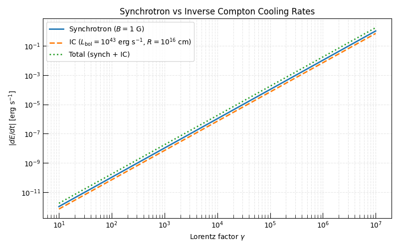
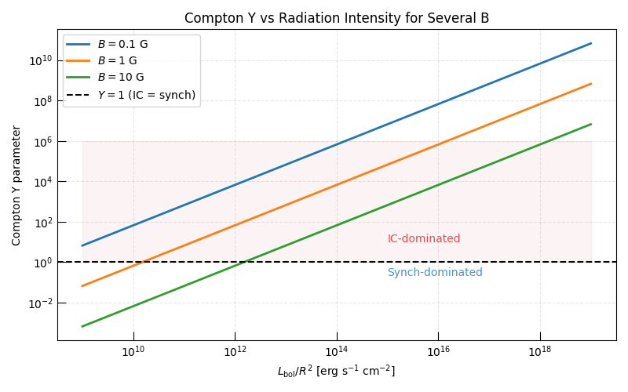
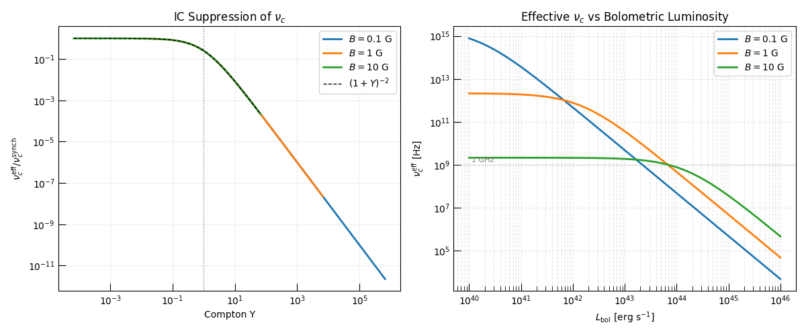

Note
Go to the end to download the full example code.
Synchrotron vs Inverse Compton Cooling#
In the presence of an external radiation field relativistic electrons lose energy not only through synchrotron radiation but also through inverse Compton (IC) scattering — up-scattering photons to higher energies. In the Thomson regime the IC cooling rate has the same \(\gamma^2\) dependence as synchrotron cooling, but the energy density driving it is the radiation energy density \(u_{\rm rad}\) rather than the magnetic energy density \(u_B = B^2/(8\pi)\):
The Compton Y parameter measures the relative importance of the two cooling channels:
When \(Y > 1\) IC cooling dominates over synchrotron cooling and the effective cooling break frequency is suppressed by a factor \((1 + Y)^{-2}\).
This example demonstrates both cooling engines and their combined effect on the cooling break frequency.
Note
Both classes are imported from radiation.synchrotron.cooling.
The Thomson-regime approximation used here breaks down at
\(4\gamma E_{\rm ph} / (m_e c^2) \gtrsim 1\); Klein–Nishina corrections
are not included in the current implementation.
Relevant API References#
SynchrotronRadiativeCoolingEngineInverseComptonCoolingEngine
import matplotlib.pyplot as plt
import numpy as np
from astropy import constants as const
from astropy import units as u
from triceratops.radiation.synchrotron.cooling import (
InverseComptonCoolingEngine,
SynchrotronRadiativeCoolingEngine,
)
from triceratops.utils.plot_utils import set_plot_style
Engine Instantiation#
synch_engine = SynchrotronRadiativeCoolingEngine(pitch_averaged=True)
ic_engine = InverseComptonCoolingEngine(pitch_averaged=True)
gamma_arr = np.geomspace(10, 1e7, 500)
# Reference parameters
B_ref = 1.0 * u.G
L_bol_ref = 1e43 * u.erg / u.s
R_ref = 1e16 * u.cm
Section 1: Cooling Rates vs γ — Synchrotron and IC#
We compare the synchrotron cooling rate for \(B = 1\) G with the IC cooling rate for a bolometric luminosity \(L_{\rm bol} = 10^{43}\) erg s\(^{-1}\) at a radius \(R = 10^{16}\) cm.
The crossover Lorentz factor \(\gamma_\times\) at which the two rates are equal does not depend on \(\gamma\) (since both go as \(\gamma^2\)); instead it depends on the ratio \(u_{\rm rad}/u_B = Y\).
set_plot_style()
rates_synch = np.array([synch_engine.compute_cooling_rate(B=B_ref, gamma=g).to_value(u.erg / u.s) for g in gamma_arr])
rates_ic = np.array(
[ic_engine.compute_cooling_rate(L_bol=L_bol_ref, R=R_ref, gamma=g).to_value(u.erg / u.s) for g in gamma_arr]
)
rates_total = rates_synch + rates_ic
fig, ax = plt.subplots(figsize=(8, 5))
ax.loglog(gamma_arr, rates_synch, lw=2, label=r"Synchrotron ($B = 1$ G)")
ax.loglog(gamma_arr, rates_ic, lw=2, ls="--", label=r"IC ($L_{\rm bol}=10^{43}$ erg s$^{-1}$, $R=10^{16}$ cm)")
ax.loglog(gamma_arr, rates_total, lw=2, ls=":", color="C2", label="Total (synch + IC)")
ax.set_xlabel(r"Lorentz factor $\gamma$")
ax.set_ylabel(r"$|dE/dt|$ [erg s$^{-1}$]")
ax.set_title("Synchrotron vs Inverse Compton Cooling Rates")
ax.legend()
ax.grid(True, which="both", ls="--", alpha=0.3)
plt.tight_layout()
plt.show()
# Compute Compton Y for the reference parameters
u_rad = (L_bol_ref / (4 * np.pi * R_ref**2 * const.c)).to(u.erg / u.cm**3)
u_B = (B_ref.to_value("G") ** 2 / (8 * np.pi)) * (u.erg / u.cm**3)
Y_ref = (u_rad / u_B).decompose().value
print(f"Radiation energy density u_rad = {u_rad:.3e}")
print(f"Magnetic energy density u_B = {u_B:.3e}")
print(f"Compton Y = {Y_ref:.2f} ({'IC-dominated' if Y_ref > 1 else 'synchrotron-dominated'})")

Radiation energy density u_rad = 2.654e-01 erg / cm3
Magnetic energy density u_B = 3.979e-02 erg / cm3
Compton Y = 6.67 (IC-dominated)
Section 2: The Compton Y Parameter#
The Compton Y parameter can be written as a function of the combined observable \(L_{\rm bol}/R^2\):
We plot \(Y\) as a function of \(L_{\rm bol}/R^2\) for three magnetic field strengths. The \(Y = 1\) line separates the IC-dominated and synchrotron-dominated regimes.
B_values = [0.1 * u.G, 1.0 * u.G, 10.0 * u.G]
B_labels = [r"$B = 0.1$ G", r"$B = 1$ G", r"$B = 10$ G"]
colors = ["C0", "C1", "C2"]
L_over_R2 = np.geomspace(1e9, 1e19, 300) * u.erg / u.s / u.cm**2
fig, ax = plt.subplots(figsize=(8, 5))
for B, label, color in zip(B_values, B_labels, colors):
u_B_val = B.to_value("G") ** 2 / (8 * np.pi)
u_rad_arr = (L_over_R2 / (4 * np.pi * const.c)).to(u.erg / u.cm**3).value
Y_arr = u_rad_arr / u_B_val
ax.loglog(L_over_R2.value, Y_arr, lw=2, color=color, label=label)
ax.axhline(1.0, color="k", ls="--", lw=1.5, label=r"$Y = 1$ (IC = synch)")
ax.fill_between([L_over_R2.value.min(), L_over_R2.value.max()], 1, 1e6, alpha=0.05, color="C3")
ax.text(1e15, 10, "IC-dominated", color="C3", fontsize=10, alpha=0.8)
ax.text(1e15, 0.2, "Synch-dominated", color="C0", fontsize=10, alpha=0.8)
ax.set_xlabel(r"$L_{\rm bol} / R^2$ [erg s$^{-1}$ cm$^{-2}$]")
ax.set_ylabel(r"Compton Y parameter")
ax.set_title("Compton Y vs Radiation Intensity for Several B")
ax.legend()
ax.grid(True, which="both", ls="--", alpha=0.3)
plt.tight_layout()
plt.show()

Section 3: Effect of IC on the Cooling Break Frequency#
When IC cooling is significant the total cooling time is \(t_{\rm cool}^{-1} = t_{\rm synch}^{-1} + t_{\rm IC}^{-1}\), so the effective cooling Lorentz factor is reduced:
and the cooling break frequency \(\nu_c^{\rm eff} \propto (\gamma_c^{\rm eff})^2 B\) is suppressed by a factor \((1 + Y)^{-2}\) relative to the synchrotron-only prediction.
t_dyn = 10.0 * u.day
# Range of L_bol at fixed R to vary Y
L_bol_arr = np.geomspace(1e40, 1e46, 100) * u.erg / u.s
R_fixed = 1e16 * u.cm
fig, axes = plt.subplots(1, 2, figsize=(12, 5))
for B, label, color in zip(B_values, B_labels, colors):
gamma_c_synch = synch_engine.compute_cooling_gamma(B=B, t=t_dyn)
nu_c_synch = synch_engine.compute_characteristic_frequency(B=B, gamma=gamma_c_synch).to_value(u.Hz)
Y_arr = []
nu_c_eff_arr = []
for L_bol in L_bol_arr:
u_rad_val = (L_bol / (4 * np.pi * R_fixed**2 * const.c)).to(u.erg / u.cm**3).value
u_B_val = B.to_value("G") ** 2 / (8 * np.pi)
Y = u_rad_val / u_B_val
Y_arr.append(Y)
# Combined cooling: IC + synch
gamma_c_eff = gamma_c_synch / (1 + Y)
nu_c_eff = synch_engine.compute_characteristic_frequency(B=B, gamma=gamma_c_eff).to_value(u.Hz)
nu_c_eff_arr.append(nu_c_eff)
Y_arr = np.array(Y_arr)
nu_c_eff_arr = np.array(nu_c_eff_arr)
axes[0].loglog(Y_arr, nu_c_eff_arr / nu_c_synch, lw=2, color=color, label=label)
axes[1].loglog(L_bol_arr.to_value(u.erg / u.s), nu_c_eff_arr, lw=2, color=color, label=label)
axes[0].loglog(Y_arr, 1 / (1 + Y_arr) ** 2, "k--", lw=1, label=r"$(1 + Y)^{-2}$")
axes[0].axvline(1.0, color="gray", ls=":", lw=1)
axes[0].set_xlabel(r"Compton Y")
axes[0].set_ylabel(r"$\nu_c^{\rm eff} / \nu_c^{\rm synch}$")
axes[0].set_title(r"IC Suppression of $\nu_c$")
axes[0].legend()
axes[0].grid(True, which="both", ls="--", alpha=0.3)
axes[1].axhline(1e9, color="gray", ls=":", lw=0.8, alpha=0.6)
axes[1].text(1.1e40, 1.3e9, "1 GHz", color="gray", fontsize=8)
axes[1].set_xlabel(r"$L_{\rm bol}$ [erg s$^{-1}$]")
axes[1].set_ylabel(r"$\nu_c^{\rm eff}$ [Hz]")
axes[1].set_title(r"Effective $\nu_c$ vs Bolometric Luminosity")
axes[1].legend()
axes[1].grid(True, which="both", ls="--", alpha=0.3)
plt.tight_layout()
plt.show()

Discussion#
Inverse Compton cooling is critical in any environment with a significant radiation field — for example, in TDEs where the disk luminosity can reach the Eddington limit, or in GRB afterglows where the prompt emission provides a seed photon field.
Key results from this example:
Both synchrotron and IC cooling scale as \(\gamma^2\), so the ratio of their rates (the Compton Y parameter) is independent of the electron Lorentz factor. IC simply rescales the effective cooling rate.
When \(Y > 1\) the cooling break is suppressed by \((1 + Y)^{-2}\), which can move \(\nu_c\) below the radio band even when the synchrotron- only estimate predicts \(\nu_c\) in the optical or X-ray.
For GHz radio sources this can qualitatively change the spectral regime (from slow-cooling to fast-cooling) and must be accounted for in closure relation analyses.
This implementation assumes the Thomson regime. Klein–Nishina corrections become important when \(4\gamma E_{\rm ph}/(m_e c^2) \gtrsim 1\) and reduce the effective IC cross-section, partially restoring the synchrotron prediction for very high-\(\gamma\) electrons.
Total running time of the script: (0 minutes 1.260 seconds)